2026-08-16 · run: arch-brand-fidelity-2026-08-16 · every artifact below passed the deterministic brand instrument (palette ΔE vs the 7 book hexes, wordmark = extracted master only, DM Sans, no gradients/shadows) and two judge seats calibrated on the book's own Do/Don't pages. Nothing here is live; approving applies it.
Content verbatim from the current cards (his own published numbers). Old cards: gradient AI art, letterspaced fake wordmark, off-palette greens. New: flat book rails, master wordmark, book icon registers.
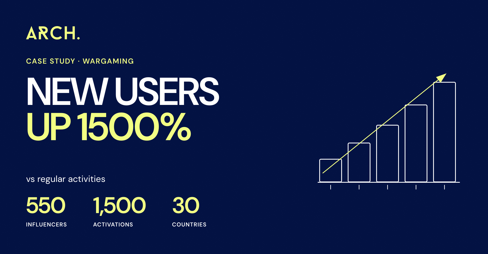
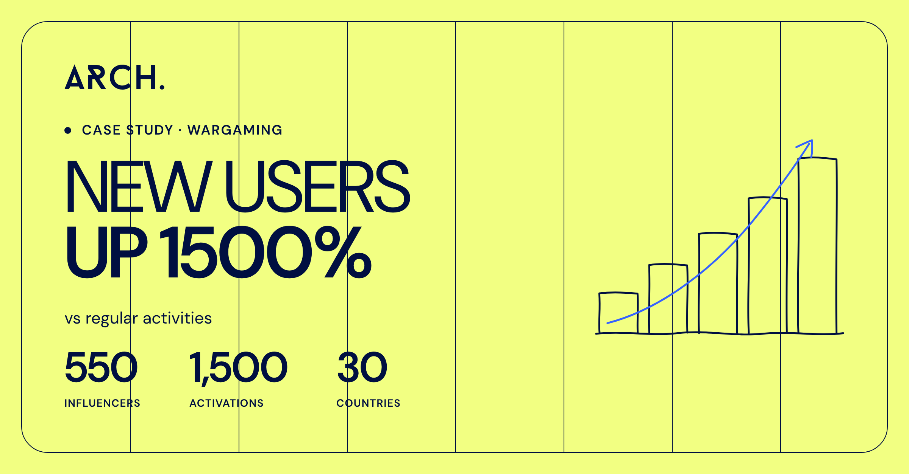
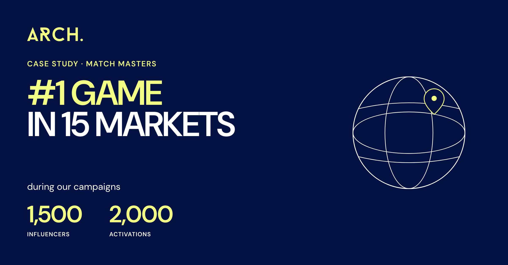
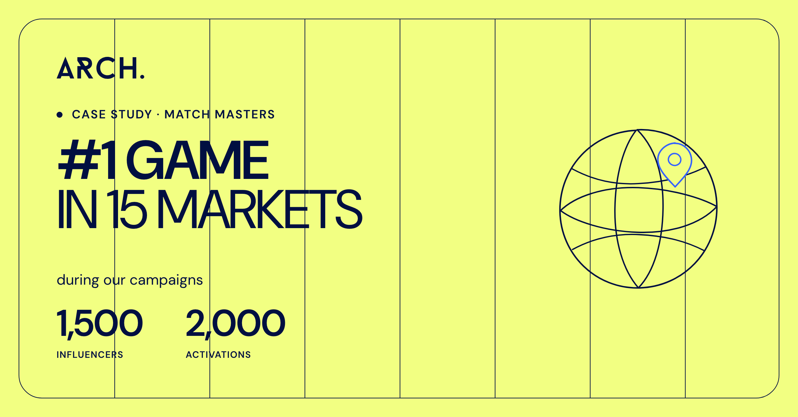
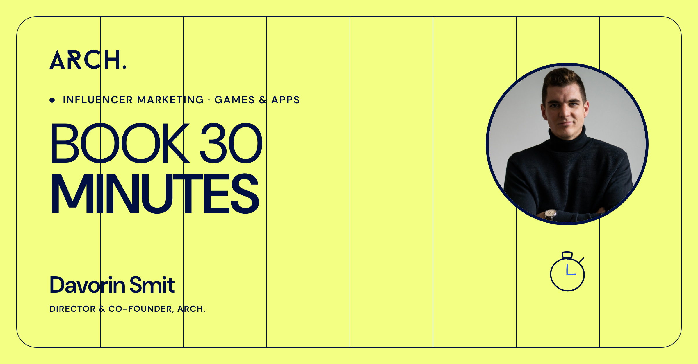
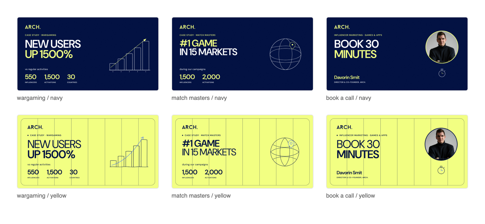
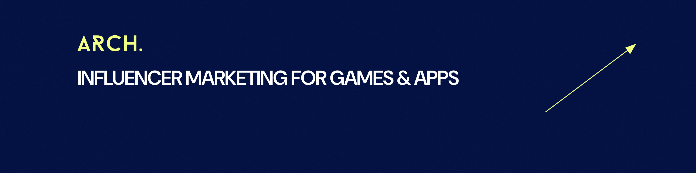
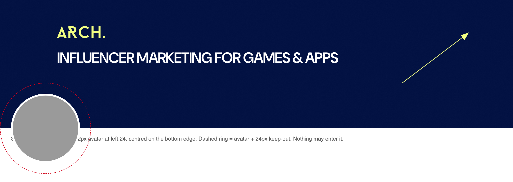
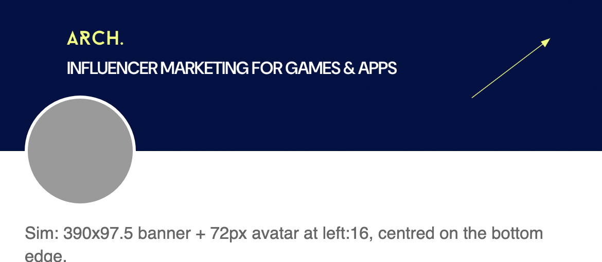
7 masters at 1080×1350. Sample copy is verbatim from the approved Wargaming deck. Cover ships in BOTH legal fields — pick the default. Visible {{…}} tokens are deliberate: an unfilled slot must be seen, and the instrument now fails any ship-as-is artifact carrying one.
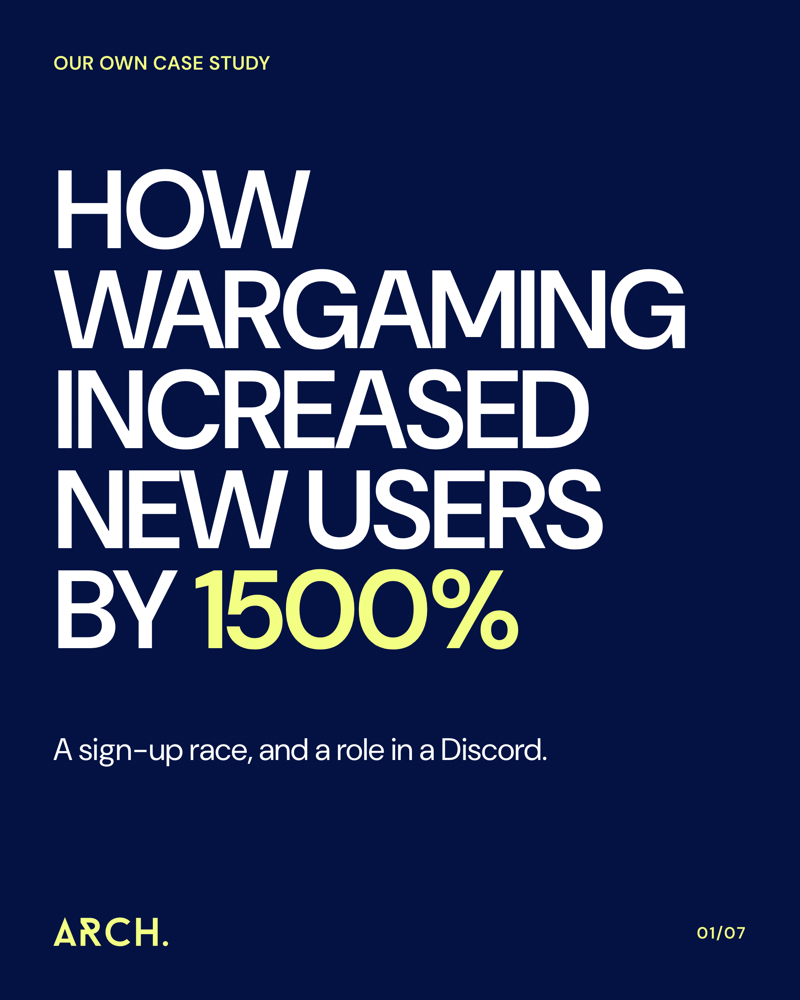
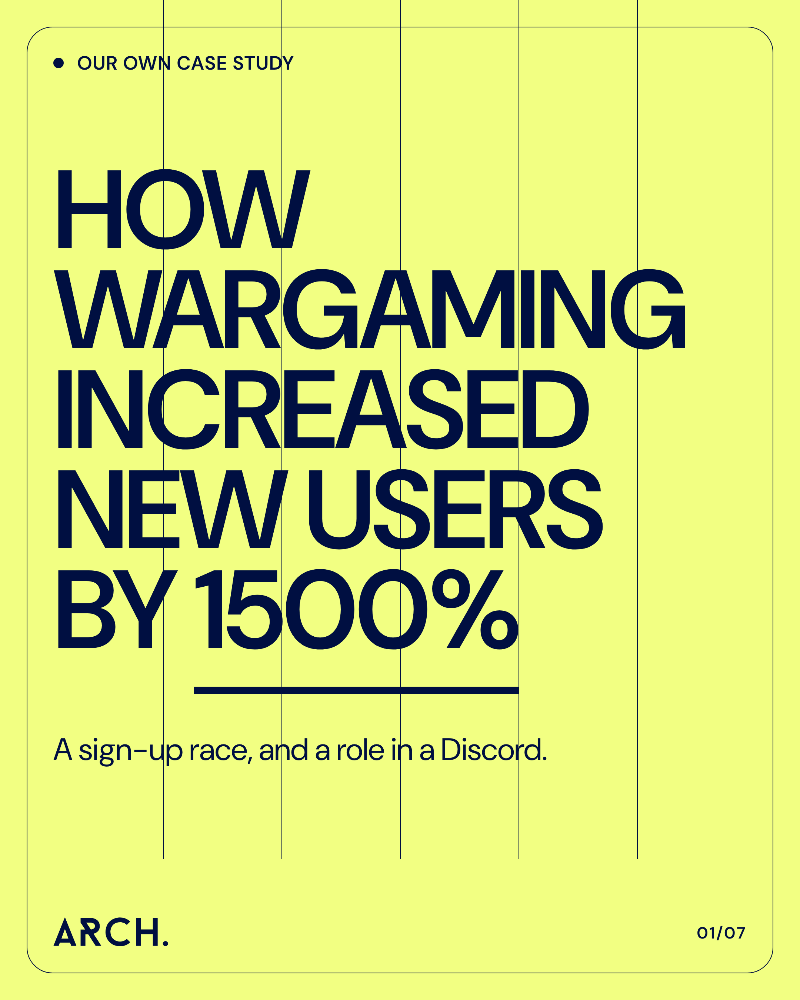
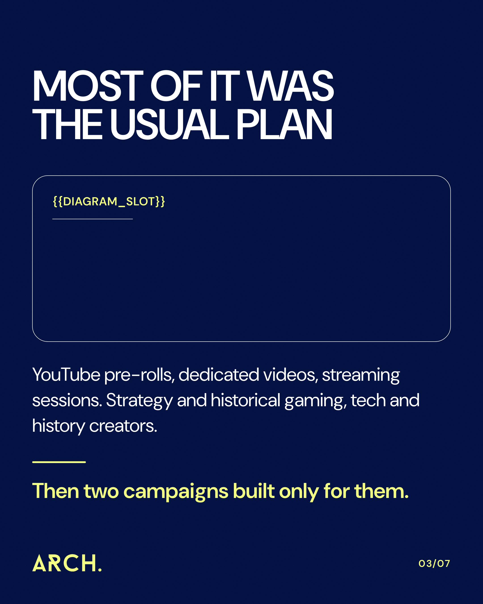
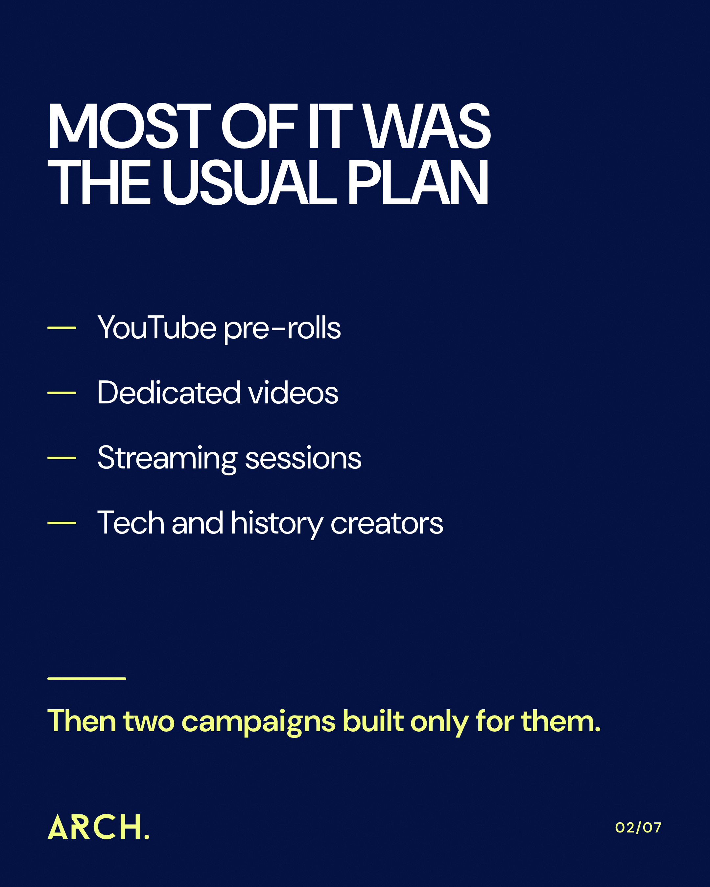
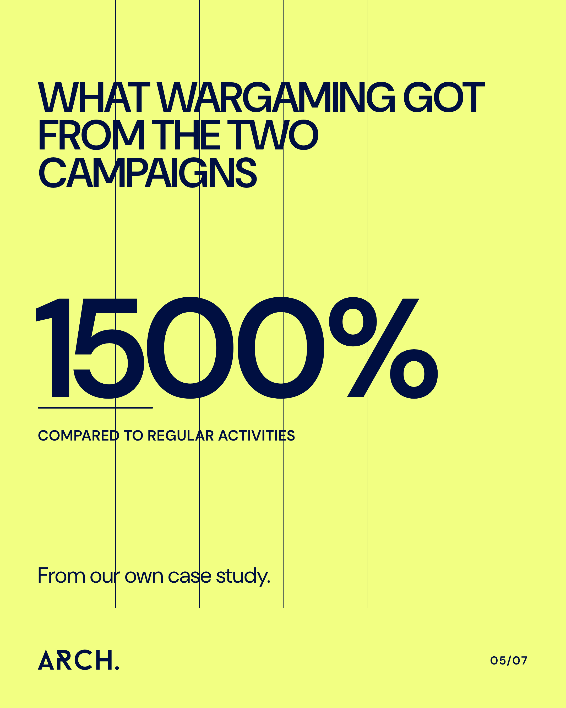
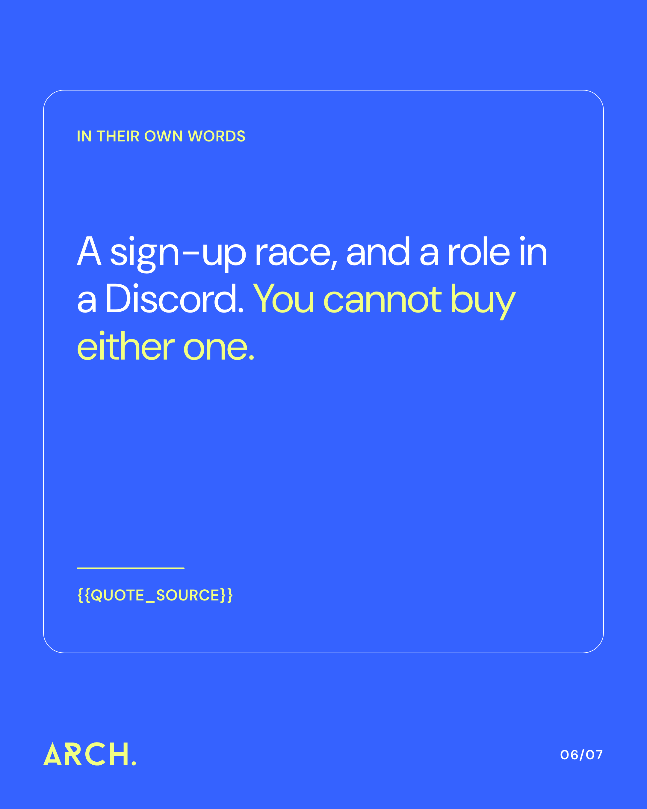
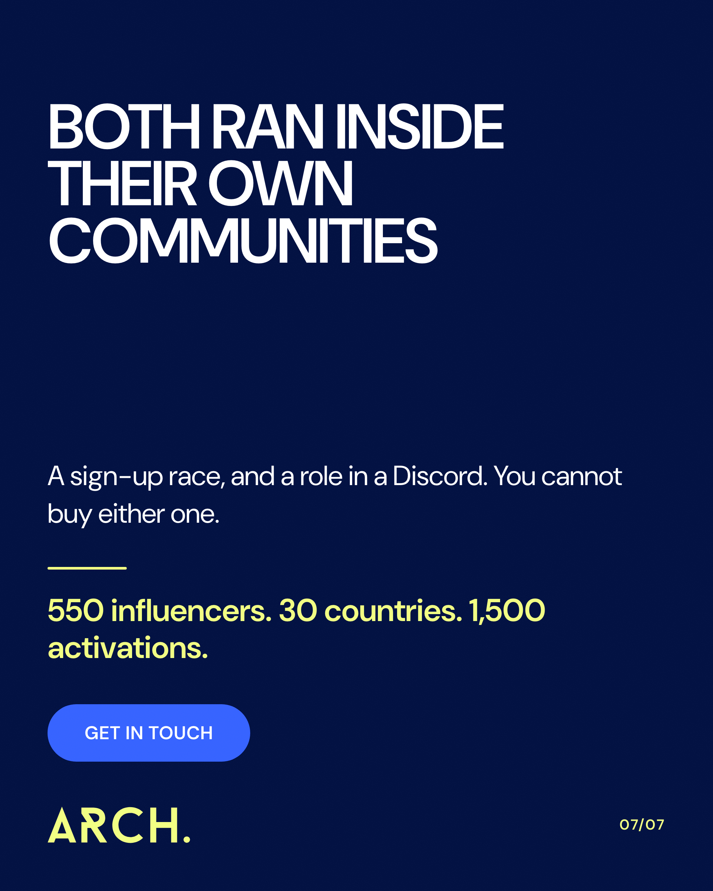
arch-brand-visual v2 → v3 — kills "yellow = secondary grey", white-only surfaces, CDN logo URLarch-carousel-craft v2 → v3 — tokens re-grounded in the book; content/voice/QA sections word-identical; adds X17 brand-instrument gateopen patch · ⚠ applies only AFTER the open whiteout-v2 ballot closes (re-coloring a page mid-judgment is wrong)
#191919, one missing wordmark): anything still queued should regen through the new templates.#6C7699 → #666666) at next report generation.